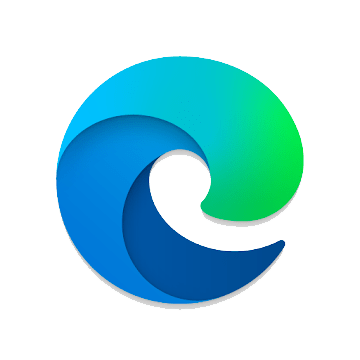
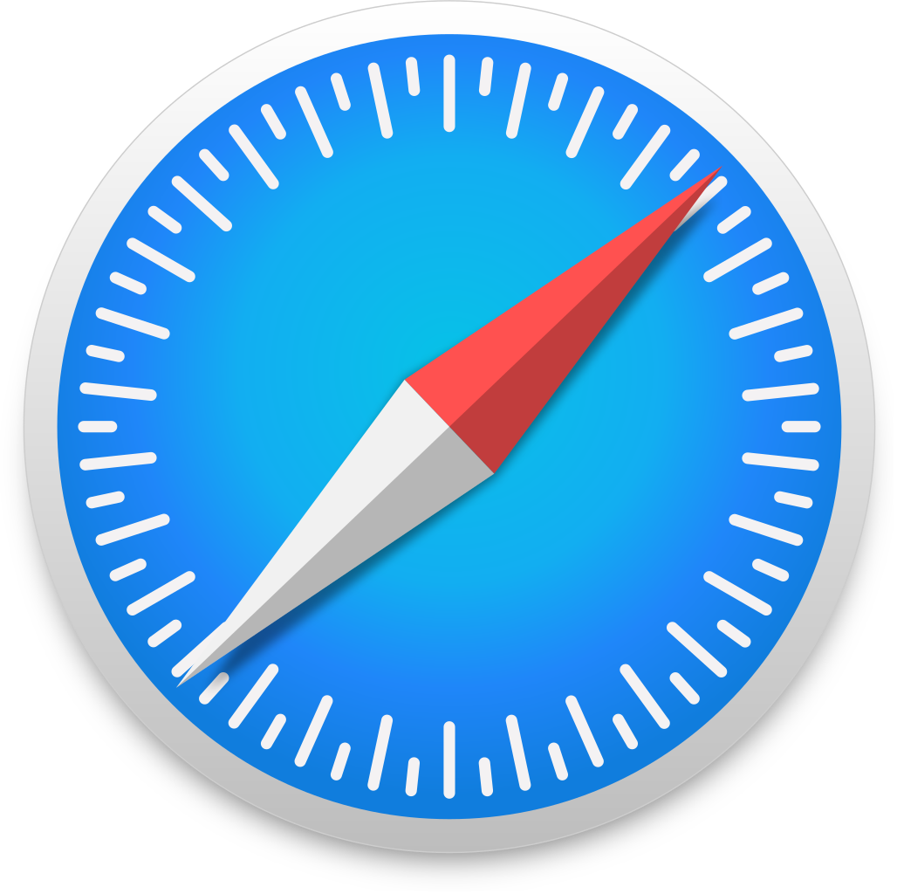
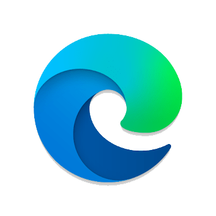
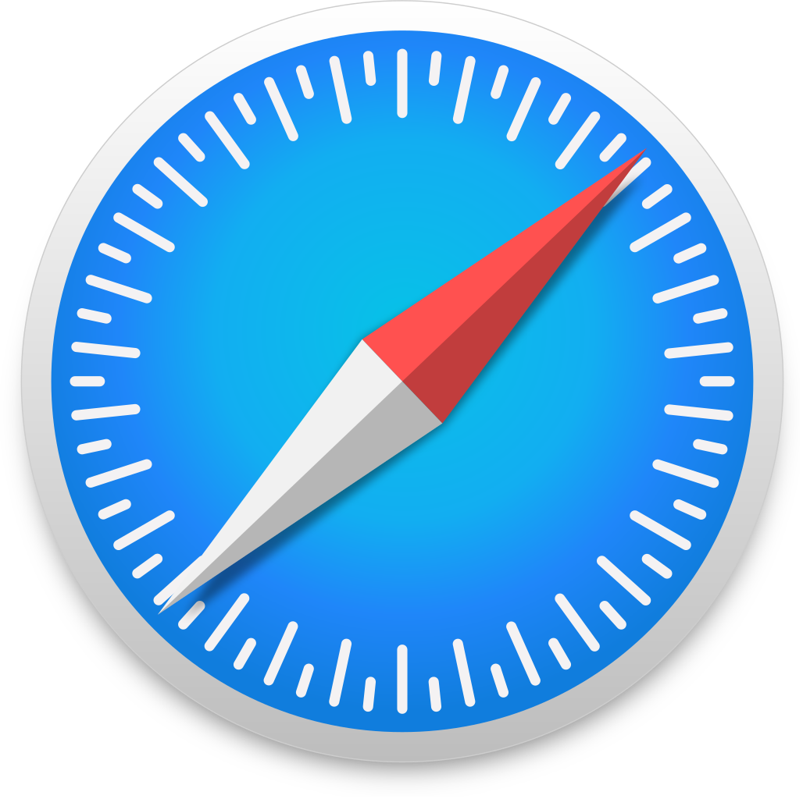

Google Chrome es un navegador web de código cerrado desarrollado por Google, aunque derivado de proyectos de código abierto (como el motor de renderizado Blink). Está disponible gratuitamente. El nombre del navegador deriva del término en inglés usado para el marco de la interfaz gráfica de usuario "chrome". Cuenta con más de 900 millones de usuarios, y dependiendo de la fuente de medición global, puede ser considerado el navegador más usado de la Web variando hasta el segundo puesto, algunas veces logrando la popularidad mundial en la primera posición.
Microsoft Edge es un navegador web desarrollado por Microsoft, basado en Chromium. Fue lanzado por primera vez para Windows 10 y Xbox One en 2015, luego para Android y iOS en 2017, para macOS en 2019, y para Linux en 2020. Originalmente construido con los propios motores EdgeHTML y Chakra de Microsoft, en 2019 Edge fue reconstruido como un navegador basado en Chromium, utilizando los motores Blink y V8. Como parte de este cambio (cuyo nombre en código es Anaheim), Microsoft ha hecho que las versiones preliminares de Edge basadas en Chromium estén disponibles en Windows 7, 8, 8.1 y macOS, además de Windows 10.
Safari es un navegador web de código cerrado desarrollado por Apple Inc. Está disponible para macOS, iPadOS e iOS, y de 2007 a 2012, estaba disponible para Windows. Está escrito sobre el framework WebKit, que incluye a WebCore, el motor de renderizado, y JavaScriptCore, el intérprete de JavaScript. Por su parte, WebKit (el motor de renderizado del navegador) está basado en el motor KHTML, creado por el proyecto KDE para su navegador Konqueror. Como resultado de esto, el motor interno de Safari es software libre y es liberado bajo los términos de la licencia LGPL. Las mejoras al código de HTML por parte de Apple son incorporadas al código de KDE rápidamente.
Mozilla Firefox (o simplemente Firefox) es un navegador web libre y de código abierto desarrollado para distintas plataformas, está coordinado por la Corporación Mozilla y la Fundación Mozilla. Usa el motor Gecko para renderizar páginas web, el cual implementa actuales y futuros estándares web.
Opera es un navegador web creado por la empresa noruega Opera Software. Usa el motor de renderizado Blink. Tiene versiones para computadoras de escritorio, teléfonos móviles y tabletas. Los sistemas operativos compatibles con Opera de escritorio son Microsoft Windows, macOS y GNU/Linux (Ubuntu, Fedora 64-bit) entre otros. Los sistemas operativos móviles soportados son Maemo, BlackBerry, Symbian, Windows Mobile, Windows Phone, Android e iOS; así como la plataforma Java ME.
| Chrome |
Edge  |
| Safari  |
Firefox |
| Opera |